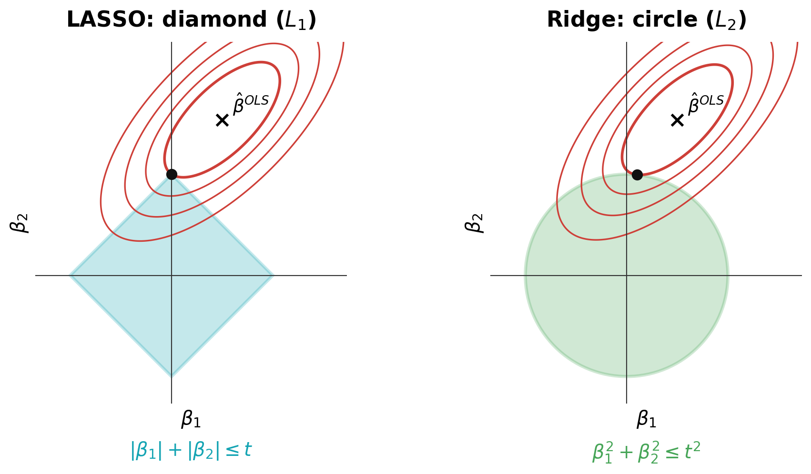
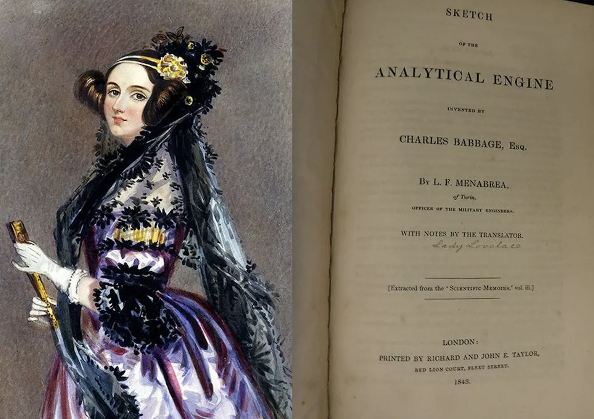
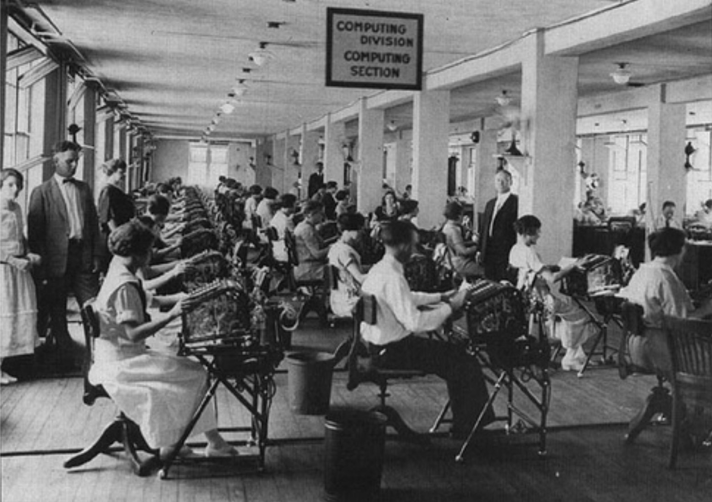
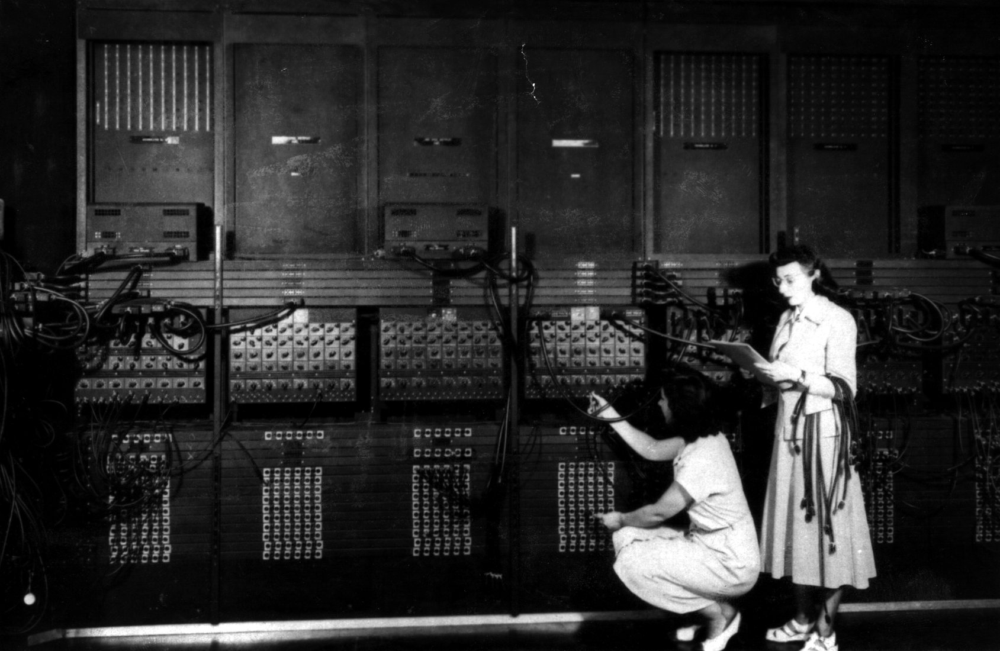
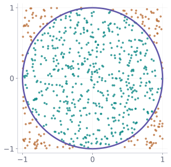
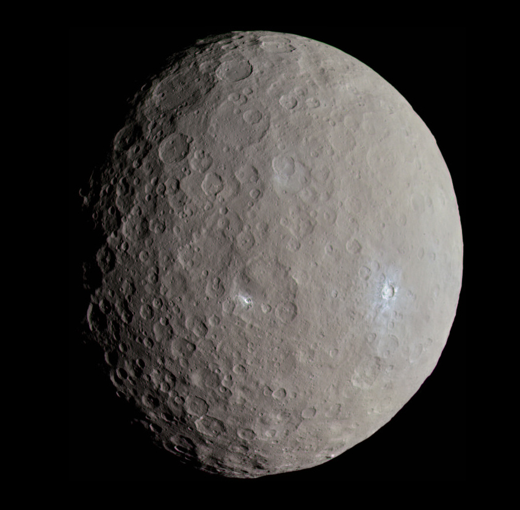

Computers, Statistics and Computational Statistics
1 From Ada Lovelace to Monte Carlo
1.1 Ada Lovelace (1843): an algorithm before a computer

In her notes to Sketch of the Analytical Engine (1843), Lovelace described steps for Babbage’s proposed Analytical Engine. She is often considered the first computer programmer and understood computers could go beyond calculation: “the engine might compose elaborate and scientific pieces of music of any degree of complexity or extent.”
There is a podcast about her in German: Ada Lovelace – Die Frau, die das Programmieren erfand
1.2 When computers were people

Astronomy, government, and engineering depended on large teams of human computers, many of them women. The main Bottleneck: every additional calculation cost human time.

In the 1930s–1940s, the landscape changed: The foundations of computation were formalized (e.g. by Turing (1936)), electronic computers (e.g. ENIAC ) enabled fast, programmable execution. Moreover, WWII posed problems too complex for purely analytical approaches that were eventually resolved by early programmers. In particular, large-scale simulation began to shift statistics from analytical to computational.
Stanislaw Ulam had the idea for the Monte-Carlo Methods in 1946 while playing solitaire at Los Alamos. It was developed by John von Neumann, Nicholas Metropolis, Marshall and Ariana Rosenbluth and many others; see Metropolis & Ulam (1949) and Metropolis et al. (1953).
The basicIdea: Approximate probabilities by repeated random experiments and counting frequencies.
The role of Monte-Carlo methods is fundamental for approximating integrals, expectations, and probabilities.

Imagine throwing points uniformly into a square. What fraction fall inside the inscribed circle?
\[ \widehat\pi_B = 4\,\frac{\text{points in circle}}{B}. \]
The approximation improves with the number of trials — at the cost of more computation.
2 A Short History of Regression
2.1 Gauss’ determination of the orbit of Ceres (1801)

In 1801, the Italian astronomer Giuseppe Piazzi recorded 22 observations of Ceres before it disappeared from view.
Each observation gave two angles (a direction in the sky), but no distance from Earth.
Gauss selected three observation dates and reconstructed an approximate orbit using celestial mechanics. His predictions helped astronomers find Ceres again in December 1801; see his later Theoria motus (1809).
2.2 Gauss’ determination of the orbit of Ceres (1801) (ctn.)
The next challenge: How could one make use of all 22 observations rather than relying on just three? Because of measurement errors, the observations would generally not agree exactly with a single orbit.
The method of least squares provided a systematic way to estimate the best-fitting orbital parameters. Legendre (1805) first published the method; Gauss (1809) gave it a probabilistic foundation and Gauss (1823) established its minimum-variance property for linear unbiased estimation.
2.3 From regression theory to computers
Much progress was made in the subsequent century:
Galton (1877) and Galton (1886): Regression towards the mean in heredity data.
Pearson (1896): Correlation and multiple regression.
Fisher (1922): Connected regression with the classical theory of observational errors.
Computationally, before WWII the calculation of least squares estimators became a bottleneck in the context of many data and many covariates.
- for instance, in 1931 Alfred Cowles proposed economic regressions involving thousands of observations and 20–30 explanatory variables, that were back in the days too expensive for the available human computing labs.
1955: Arthur Cohen’s IBM 650 program automated multiple-regression calculations using a punched-card system which could eventually solve linear least squares problems with up to 10.000 observations and 33 covariates.
2.4 Model Selection: Best subset selectors
Model selection (e.g. which predictors should enter the model?) remained a computational difficult problem: With \(p\) candidates there are \(2^p\) subsets — 1,048,576 at \(p=20\).
Early algorithms: Efroymson (1960) developed computational procedures for stepwise regression; Gorman & Toman (1966) and Hocking & Leslie (1967) proposed methods for identifying promising subsets. Furnival & Wilson (1974) introduced Leaps and Bounds, making best-subset search substantially more efficient.
However, even with these algorithms, in the context of many covariates computational bottlenecks exist (even today).
Moreover, even if we can identify the best-fitting subset, small changes in the data may lead to very different selected models and coefficient estimates.
2.5 Shrinkage: Ridge-Regression
- Shrinkage estimation: Rather than choosing variables exclusively by inclusion or exclusion, Hoerl & Kennard (1970) proposed ridge regression, deliberately introducing bias to reduce estimation variance and improve stability.
\[ \widehat\beta_{\lambda} = \operatorname{argmin}_{\beta} \left\{\lVert Y-X\beta\rVert_2^2 + \lambda\lVert\beta\rVert_2^2\right\}. \]
2.6 Shrinkage: LASSO
- Combining shrinkage and selection: Tibshirani (1996) introduced the lasso, which shrinks coefficients and can set some of them exactly to zero.
\[ \widehat\beta_{\lambda} = \operatorname{argmin}_{\beta} \left\{\lVert Y-X\beta\rVert_2^2 + \lambda\lVert\beta\rVert_1\right\}. \]
- The central idea: Good estimation is not necessarily about fitting the observed data as closely as possible, but about obtaining stable models that generalise to new observations.
2.7 Why can LASSO set coefficients exactly to zero?
Geometric intuition: The red curves are RSS contours, \(\times\) marks ordinary least squares, and \(\bullet\) marks the constrained optimum. The \(L_1\) diamond has corners on the axes, allowing exact zeros; the smooth \(L_2\) circle generally gives nonzero, shrunken coefficients.
2.8 Assessment of predictive accuracy: cross-validation
A model that fits the observed data well may predict new observations poorly. Training error is typically too optimistic.
Cross-validation (CV): Divide the data into \(K\) folds. Refit the model on \(K-1\) folds, evaluate predictions on the held-out fold, and repeat.
\[ \widehat{\mathrm{CV}}(\lambda) =\frac{1}{n}\sum_{k=1}^{K}\sum_{i\in I_k} \bigl(Y_i-\widehat f_{\lambda}^{(-k)}(X_i)\bigr)^2. \]
- Historical milestones: Stone (1974); Wahba & Wold (1975); Golub, Heath & Wahba (1979) and many more.
An English Interview on Grace Wahba’s contributions Stats + Stories Episode 372.
3 What did computers actually change?
3.1 Comparison of statistical task before and after the Computer Age
| Earlier | With programmable computation |
|---|---|
| Fit a small number of models | Compare many possible models |
| Choose complexity by judgement or limited calculations | Fit penalised models over many tuning values |
| Assess predictive accuracy on a small scale | Repeat train/test splits and cross-validation |
None of these questions was invented by the computer. It made their systematic investigation feasible. We will learn about that in this course.